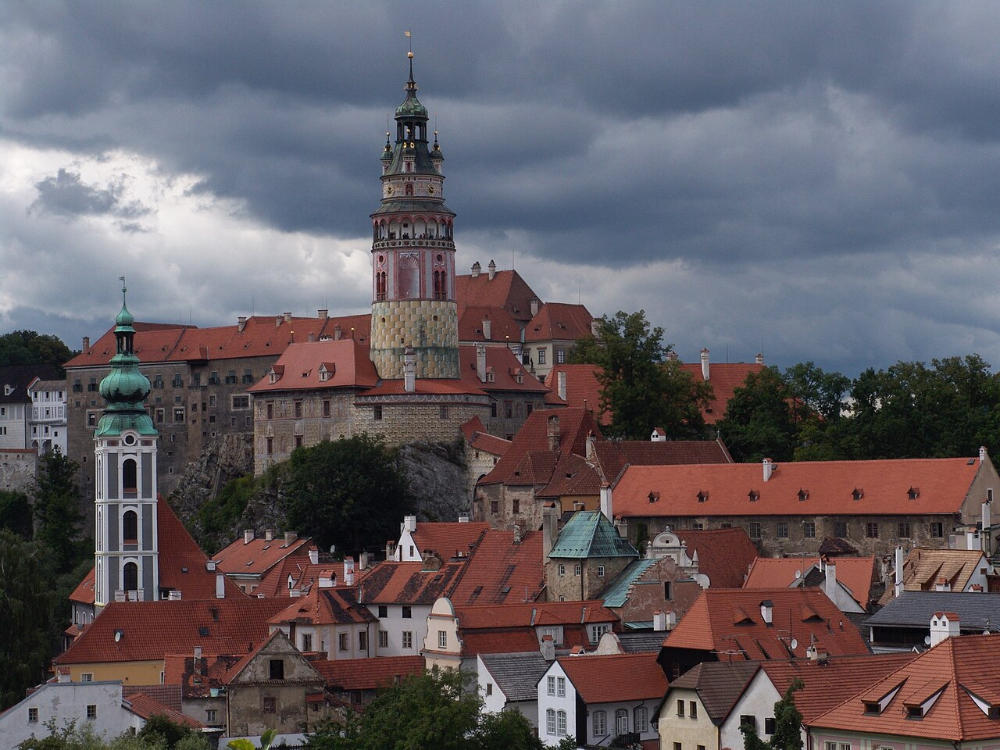
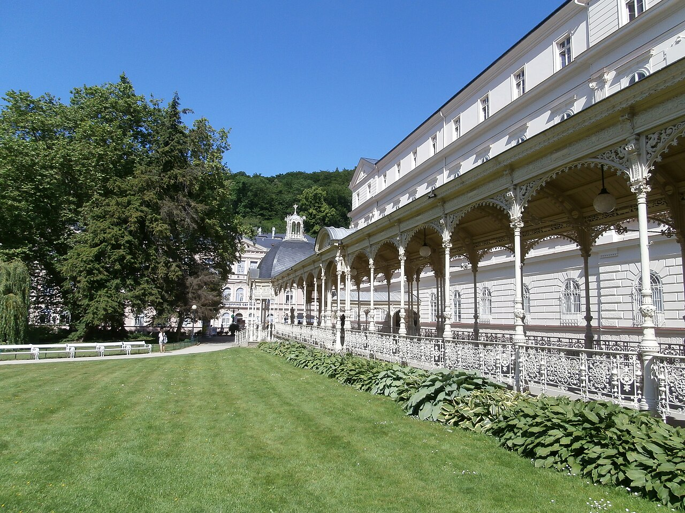
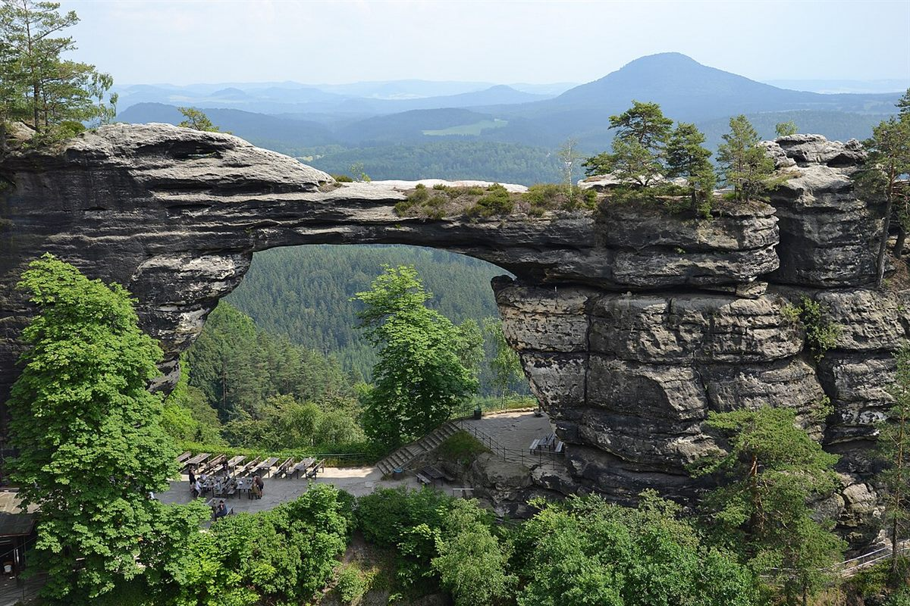
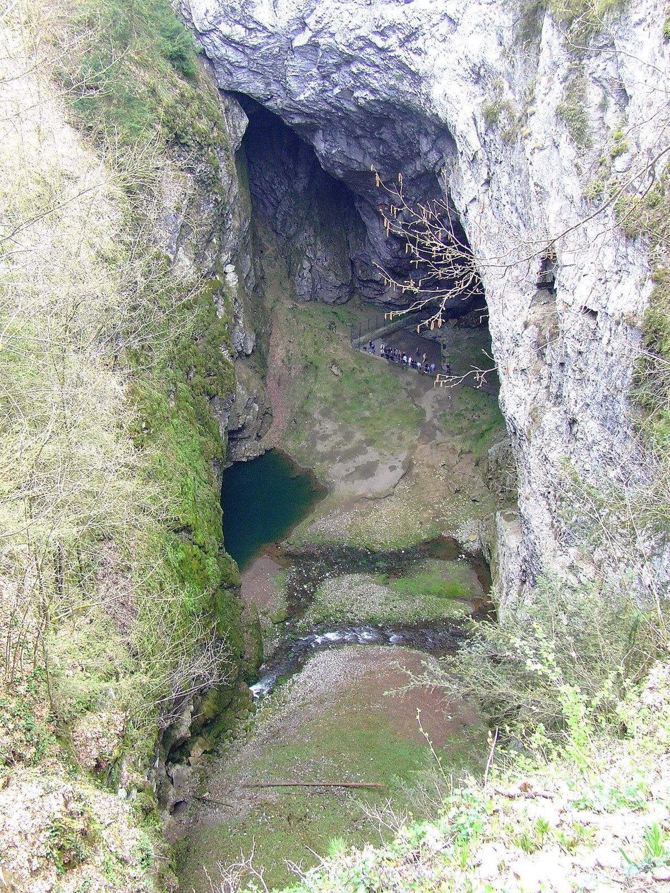
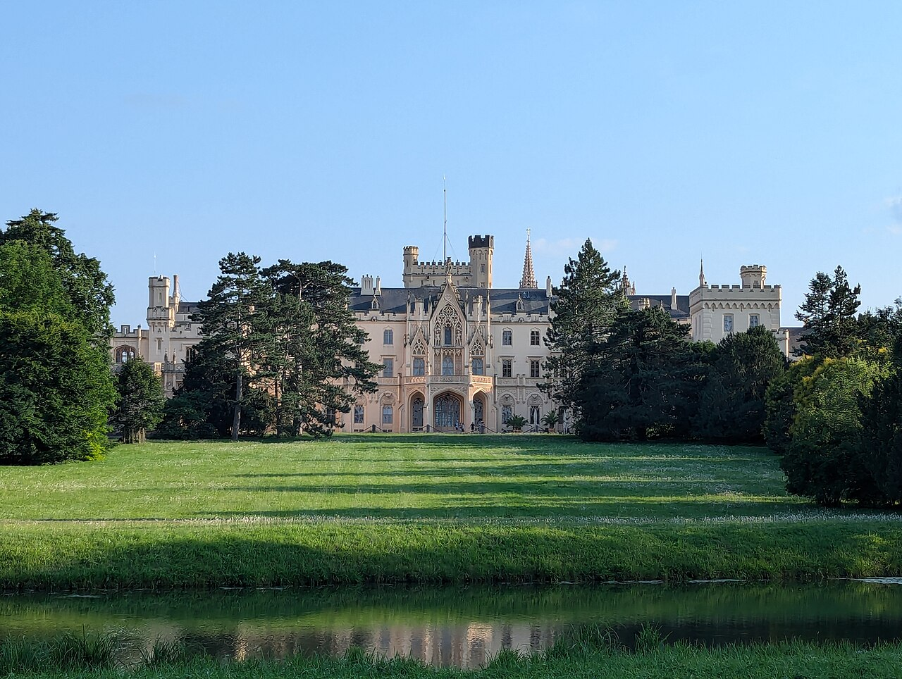
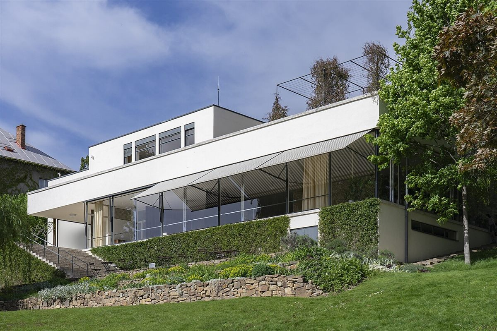
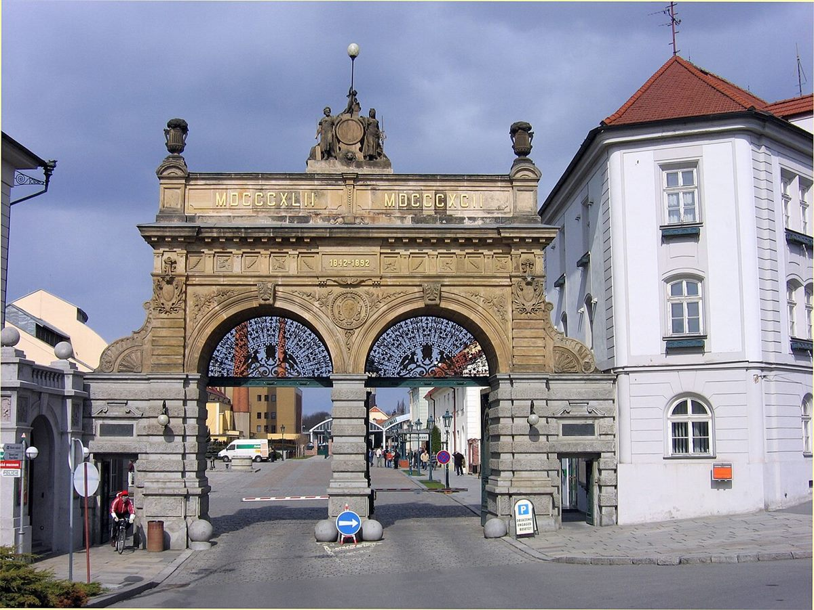

한눈에 보기
- 직항인천 → 프라하대한항공·아시아나, 거의 매일, 약 13시간 30분
- 시차한국보다 8시간 느림서머타임(3월 말~10월 말)에는 7시간
- 추천 시기5~6월, 9월12월은 크리스마스 마켓 여행으로 추천
- 추천 일정5~8일프라하 3~4 + 체스키크룸로프 1~2 + 근교 당일치기
- 물가프라하는 서울과 비슷, 지방은 저렴맥주·마트는 싸고, 프라하 숙박·택시는 비쌈
- 통화코루나(CZK, Kč)1Kč ≈ 65원. 유로를 쓰지 않음
- 입국무비자 90일솅겐 국가 전체 합산 180일 중 90일
- 전압230V · E형한국 플러그 대부분 그대로 사용
한국에서 가는 법
대한항공
주 4회- 노선
- 인천(ICN) → 프라하 바츨라프 하벨(PRG)
- 편명
- KE935 (돌아오는 편 KE936)
- 운항 요일
- 월·수·금·토 (2025년 운항 기준)
- 비행 시간
- 갈 때 약 13시간 30분 · 올 때 약 12시간
- 기종
- 보잉 787-9
20년 가까이 이어진 노선입니다. 시즌에 따라 횟수가 달라집니다.
아시아나항공
주 3회- 노선
- 인천(ICN) → 프라하(PRG)
- 편명
- OZ545 (돌아오는 편 OZ546)
- 운항 요일
- 화·목·일 (2025년 4월 취항 기준)
- 비행 시간
- 갈 때 약 13시간 30분 · 올 때 약 12시간
대한항공과 합쳐 매일 연결됩니다. 2026년 12월 17일 통합 대한항공 출범 뒤에는 편명·요일이 바뀔 수 있습니다.
직항 말고 이렇게도 갈 수 있어요
- 빈 직항(대한항공 등)으로 들어가면 빈 → 프라하 기차 약 4시간, 빈 → 브르노 약 1시간 30분입니다.
- 바르샤바(LOT)·헬싱키(핀에어)·프랑크푸르트(루프트한자)·이스탄불(터키항공) 경유편이 직항보다 싼 경우가 많습니다.
- 프라하 IN · 부다페스트 또는 빈 OUT으로 동유럽 3국을 이어 도는 일정이 한국 여행자에게 가장 흔합니다.
운항 요일·횟수는 시즌마다 바뀌고, 대한항공·아시아나 통합(2026년 12월) 뒤에 다시 조정될 수 있습니다. 예약 전에 항공사 사이트에서 날짜를 넣어 확인하세요.
언제 가면 좋을까
프라하의 월평균 최고·최저 기온과 강수량입니다. 아래 칸의 색은 여행하기 좋은 정도입니다.
남모라비아(브르노·미쿨로프)는 조금 더 따뜻하고 건조합니다. 해 지는 시각: 12월 오후 4시 무렵, 6월 밤 9시 15분 무렵.
봄
3~5월구시가 광장에 부활절 마켓이 서고, 4월 말에는 페트린 언덕에 벚꽃과 사과꽃이 핍니다. 5월 12일에는 프라하의 봄 음악 축제가 막을 올립니다.
좋은 점
- 꽃이 핀 페트린 언덕과 성 정원
- 여름보다 인파가 적음
- 5월부터 지방 성들이 문을 엶
아쉬운 점
- 3월은 아직 춥고 많은 성이 휴관
- 부활절 전후에는 숙소가 비쌈
옷차림경량 패딩, 겹쳐 입을 옷
여름
6~8월밤 9시가 넘어도 밝아 블타바 강변과 레트나 공원 비어가든에 사람이 모입니다. 카를로비바리 영화제, 체스키크룸로프 장미 축제가 열립니다.
좋은 점
- 낮이 길고 모든 명소가 운영
- 강변·공원 야외 문화가 가장 좋음
- 보헤미안 스위스 등 자연 여행 제철
아쉬운 점
- 카를교·구시가는 낮 시간 인파가 극심
- 숙소 가격이 1년 중 가장 비쌈
- 에어컨 없는 숙소와 30도 넘는 날
옷차림반팔, 편한 운동화(돌길), 얇은 겉옷
가을
9~11월9월에는 막 발효된 햇와인 부르착(burčák)이 나오고 남모라비아에서 포도 수확 축제가 열립니다. 10월에는 플젠 맥주 축제와 프라하 빛 축제(시그널)가 있습니다.
좋은 점
- 9월은 날씨·인파·가격의 균형이 가장 좋음
- 와인·맥주 축제
- 단풍 든 프라하성 주변
아쉬운 점
- 11월은 흐리고 일찍 어두워짐
- 10월 말부터 지방 성들이 겨울 휴관에 들어감
옷차림9월 가벼운 재킷, 10~11월 코트
겨울
12~2월구시가 광장의 커다란 트리와 크리스마스 마켓이 1월 초까지 이어집니다. 12월 5일 저녁에는 성 미쿨라시와 천사·악마 차림의 사람들이 거리를 돌고, 성탄 전에는 거리에서 통 속의 잉어를 팝니다.
좋은 점
- 유럽에서 손꼽히는 크리스마스 마켓
- 1~2월 항공·숙소가 가장 저렴
- 눈 덮인 프라하성과 체스키크룸로프
아쉬운 점
- 영하의 날씨와 돌길 빙판
- 체스키크룸로프 성 내부 등 지방 성 대부분이 휴관
- 해가 짧음
옷차림두꺼운 패딩, 모자·장갑, 밑창이 미끄럽지 않은 신발
여행자도 즐길 수 있는 축제·행사
-
2월
마소푸스트(사육제)Masopust
사순절 전 가면을 쓰고 마을을 도는 카니발. 프라하 근교 마을과 지방에서 전통 행렬을 볼 수 있습니다.
여행 팁프라하 시내에서도 소규모 행진이 열립니다.
-
3~4월
부활절 마켓Velikonoční trhy
구시가 광장과 바츨라프 광장에 색칠한 달걀, 버드나무 회초리(폼라즈카) 노점이 섭니다.
여행 팁성금요일·부활절 월요일은 공휴일입니다. 2027년은 3월 26·29일.
-
4월 30일
마녀 화형의 밤Pálení čarodějnic
겨울을 보내는 의미로 마녀 인형을 모닥불에 태우는 봄맞이 행사. 프라하 공원과 시골 마을 곳곳에서 열립니다.
여행 팁이튿날 5월 1일에는 꽃 핀 벚나무 아래에서 입을 맞추는 "연인의 날" 풍습이 있습니다(페트린 언덕).
-
5월 12일~6월 초
프라하의 봄 국제음악축제Pražské jaro
스메타나 서거일에 연작 교향시 「나의 조국」으로 개막하는 클래식 축제. 루돌피눔과 시민회관에서 열립니다.
여행 팁개막 공연은 몇 달 전에 매진됩니다.
-
6월
프라하 박물관의 밤Pražská muzejní noc
토요일 저녁부터 밤늦게까지 프라하의 박물관·갤러리를 무료로 엽니다.
여행 팁평소 닫혀 있는 건물이 열리기도 합니다.
-
6월 하순
다섯 꽃잎 장미 축제Slavnosti pětilisté růže
체스키크룸로프가 르네상스 시대로 돌아가는 주말 축제. 의상 행렬, 기사 시합, 거리 공연이 열립니다.
여행 팁축제 기간에는 구시가 입장료(팔찌)를 받습니다.
-
7월 초
카를로비바리 국제영화제MFF Karlovy Vary
중·동유럽에서 가장 큰 영화제. 온천 도시 전체가 축제 분위기가 됩니다.
여행 팁일반인도 표를 사서 영화를 볼 수 있습니다.
-
9월
포도 수확 축제와 부르착Vinobraní
남모라비아 즈노이모·미쿨로프의 수확 축제. 이 무렵에만 마실 수 있는 햇와인 부르착을 길거리에서 팝니다.
여행 팁프라하에서 기차·버스로 약 3시간. 브르노를 거점으로 하면 편합니다.
-
10월 초
필스너 페스트Pilsner Fest
1842년 10월 5일 첫 필스너 양조를 기념하는 플젠의 맥주 축제. 양조장 투어와 야외 공연이 열립니다.
여행 팁프라하에서 기차로 약 1시간 30분.
-
10월
시그널 페스티벌Signal Festival
프라하 건물과 광장을 캔버스로 쓰는 빛·영상 축제. 대부분 작품은 무료로 볼 수 있습니다.
여행 팁저녁 7시 이후 구시가 일대가 매우 붐빕니다.
-
11월 17일
자유와 민주주의를 위한 투쟁의 날Den boje za svobodu a demokracii
1989년 벨벳 혁명을 기념해 나로드니 거리 기념판 앞에 촛불과 꽃이 놓이고, 거리 공연과 토론이 열립니다.
여행 팁시민들이 직접 만드는 기념일 분위기를 볼 수 있습니다.
-
11월 말~1월 6일
크리스마스 마켓Vánoční trhy
구시가 광장, 바츨라프 광장, 평화 광장(Náměstí Míru)의 마켓. 트르들로(굴뚝빵)보다 따뜻한 와인 스바르작(svařák)과 소시지가 현지인 선택입니다.
여행 팁구시가 광장보다 평화 광장 마켓이 덜 붐비고 저렴합니다.
공휴일과 기념일
| 날짜 | 공휴일 | 여행자에게 미치는 영향 |
|---|---|---|
| 1월 1일 | 새해 · 독립 체코 국가 회복일1993년 체코슬로바키아 분리 | 대형 상점 휴무 |
| 성금요일 · 부활절 월요일 (2027년 3월 26·29일) | 부활절월요일 아침 남자들이 버드나무 회초리로 여자들을 가볍게 치는 풍습(폼라즈카) | 부활절 월요일은 대형 상점 휴무 |
| 5월 1일 · 5월 8일 | 노동절 · 해방 기념일5월 8일은 1945년 2차 세계대전 종전 | 5월 8일 대형 상점 휴무 |
| 7월 5일 · 7월 6일 | 키릴·메토디우스 축일 · 얀 후스의 날슬라브 문자 전도와 종교개혁가 후스를 기념 | 이틀 연휴로 지방 여행지가 붐빔 |
| 9월 28일 | 체코 국가의 날(성 바츨라프 축일)수호성인 바츨라프 | 대형 상점 휴무 |
| 10월 28일 | 독립 체코슬로바키아 건국일1918년 건국 | 대형 상점 휴무, 프라하성 주변 행사 |
| 11월 17일 | 자유와 민주주의를 위한 투쟁의 날1939년 학생 시위와 1989년 벨벳 혁명 | 상점은 대부분 영업 |
| 12월 24~26일 | 성탄 전야 · 성탄절24일 저녁 잉어 튀김과 감자 샐러드를 먹는 만찬 | 24일은 정오 이후, 25·26일은 대형 상점 휴무 |
체코는 일요일에도 대부분의 상점이 문을 엽니다. 다만 위 표에서 "대형 상점 휴무"라고 적은 날에는 법에 따라 큰 마트(200㎡ 이상)가 닫고, 작은 가게·역 매점·관광지 상점은 엽니다.
물가: 서울과 비교하면
프라하 중심가는 서울과 비슷하거나 조금 비쌉니다(숙박·택시·대중교통). 대신 맥주와 마트 물가는 확실히 싸고, 프라하를 벗어나면 외식과 숙박이 20~30% 저렴해집니다.
환율 기준: 1코루나(Kč) ≈ 65원 · 막대의 진한 부분은 최저가, 연한 부분은 최고가까지입니다.
-
카페 카푸치노약 10% 비쌈
-
펍 생맥주 0.5L (필스너 등)비슷
-
평일 점심 메뉴(폴레드니 메뉴)약 40% 비쌈
-
중급 식당 메인 요리비슷
-
마트 맥주 0.5L약 43% 저렴
-
마트 생수 1.5L약 13% 저렴
-
시내 대중교통 30분권약 57% 비쌈
-
앱 택시(볼트·우버) 시내 5km약 63% 비쌈
-
기차 프라하 → 브르노 (약 2시간 30분)약 51% 저렴
-
3성급 호텔 더블룸 1박 (프라하)약 75% 비쌈
-
주요 명소 입장권약 8.7배
현지 가격은 2026년 하반기 프라하 기준 대략적인 범위이며, 원화는 1Kč = 65원으로 계산했습니다. 대중교통은 2026년 1월 인상된 공식 요금(앱 36Kč · 종이표 39Kč)입니다. 구시가 광장 주변 식당은 이보다 30~50% 비쌉니다.
현지 교통
공항에서 시내로
프라하 공항에는 지하철이 없습니다. 119번 버스로 메트로 A선 나드라지 벨레슬라빈역까지 약 17분 간 뒤 갈아타면 90분권 하나로 시내까지 갑니다. 중앙역행 공항 익스프레스(AE) 버스도 있습니다.
90분권 46Kč(앱) · 50Kč(종이표)
시내 대중교통
트램·지하철·버스·푸니쿨라를 시간제 승차권 하나로 갈아탑니다. 공식 앱 "PID 리타치카(Lítačka)"로 사면 종이표보다 싸고, 종이표는 탑승 직후 펀칭해야 합니다. 검표원이 자주 나오고 무임승차 벌금이 큽니다.
30분권 36Kč(앱) · 90분권 46Kč(앱)
도시 간 이동
체코철도(ČD), 레기오젯(RegioJet), 레오 익스프레스가 경쟁해 요금이 쌉니다. 쿠트나호라 기차 약 1시간, 플젠 약 1시간 30분, 브르노 약 2시간 30분. 체스키크룸로프(약 3시간)와 카를로비바리(약 2시간 15분)는 버스가 편합니다.
100~450Kč (7천~3만 원)
택시와 앱
볼트·우버·리프타고(Liftago)를 쓰면 요금이 미리 정해져 안전합니다. 구시가에서 길가 택시를 잡으면 바가지 위험이 큽니다.
시내 5km 150~250Kč
장점과 단점
이래서 좋아요
- 대한항공·아시아나 직항으로 거의 매일 연결
- 프라하 중심이 작아 걸어서 대부분 둘러볼 수 있음
- 맥주가 싸고 맛있으며 펍 문화가 즐거움
- 빈·부다페스트·크라쿠프로 이어 가기 쉬움
- 일요일에도 상점 대부분이 영업
이건 알고 가세요
- 프라하 중심가는 서유럽 수준의 물가와 인파
- 관광지 환전소·택시·식당 바가지(테이블 빵·안주 별도 요금)에 주의
- 지방 성 대부분이 11~3월 휴관
- 프라하를 벗어나면 영어가 덜 통함
- 코루나를 쓰므로 유로를 내면 환율이 나쁨
관광 명소 9곳
사진은 Wikimedia Commons에 공개된 실제 촬영본이며, 저작자와 라이선스를 각 사진 아래에 적었습니다. 촬영한 날씨·시기·구도에 따라 실제 모습은 다를 수 있습니다.
-

사진: Indies1 · CC BY-SA 4.0 · Wikimedia Commons 프라하성Pražský hrad
성 비투스 대성당의 첨탑과 왕궁이 이루는 대규모 역사 공간.
자세히 보기
보헤미아 군주의 권력 중심에서 현대 체코 대통령 관저로 이어지는 성곽 지구다. 성 비투스 대성당, 옛 왕궁, 황금소로를 함께 둘러보며 여러 시대의 건축 양식을 비교할 수 있다.
- 관람·학습 포인트
- 성 비투스 대성당의 스테인드글라스 · 고딕·르네상스·바로크 건축의 중첩 · 황금소로와 조망대
- 방문 유의사항
- 성 내부와 성당 촬영 규정·입장구역을 미리 확인.
출처: visitczechia.com
-

사진: Hans Lemuet (Spone) · CC BY-SA 3.0 · Wikimedia Commons 체스키크룸로프Český Krumlov
강이 U자 형태로 감싸는 중세 도시.
자세히 보기
블타바강의 굽이를 따라 구시가지와 성이 조밀하게 자리 잡은 유네스코 세계유산이다. 성탑과 정원, 바로크 극장과 골목이 핵심 볼거리다.
- 관람·학습 포인트
- 강과 붉은 지붕을 함께 보는 성탑 · 전통 바로크 극장 · 곡선으로 흐르는 블타바강
- 방문 유의사항
- 골목 전경을 찍은 사진 대신 성탑 가까운 사진과 강 전경을 구분하여 배치.
출처: visitczechia.com
-

사진: Txllxt TxllxT · CC BY-SA 4.0 · Wikimedia Commons 쿠트나호라Kutná Hora
은광 도시의 성 바르보라 성당.
자세히 보기
중세 은 광산으로 번영한 도시다. 독특한 아치형 지붕의 성 바르보라 성당과 석조거리에서 광산도시의 역사를 살펴볼 수 있으며 세들레츠 납골당은 별도의 세부 카드로 설명한다.
- 관람·학습 포인트
- 성 바르보라 성당 내부 천장 · 은광과 화폐 주조의 역사 · 세들레츠 납골당의 윤리적 촬영 가이드
- 방문 유의사항
- 납골당은 추모공간이라는 점을 명시하고 운영·촬영 제한을 공식 홈페이지에서 확인.
출처: visitczechia.com
-

사진: Jan30112011 · CC BY-SA 4.0 · Wikimedia Commons 카를로비바리Karlovy Vary
주랑과 광천이 이어지는 온천 휴양도시.
자세히 보기
광천이 흐르는 계곡을 따라 호텔과 주랑 건축이 펼쳐진 유럽의 전통 온천도시다. 음용 광천 체험, 주랑 산책, 영화제 문화가 함께 존재한다.
- 관람·학습 포인트
- 목재·석재 주랑의 구조 · 광천 시음 전 수온·건강 유의 · 온천도시가 형성된 역사
- 방문 유의사항
- 뜨거운 광천을 자유롭게 마시라고 권하지 말고 현장 안내를 따르도록 표기.
출처: whc.unesco.org
-

사진: Pudelek · CC BY-SA 4.0 · Wikimedia Commons 보헤미안 스위스České Švýcarsko
유럽 최대급 천연 사암 아치의 숲길.
자세히 보기
독일 접경지의 사암 봉우리와 협곡, 숲이 인상적인 국립공원이다. 프라브치츠카 브라나(Pravčická brána) 자연 아치가 대표 이미지로 적합하다.
- 관람·학습 포인트
- 사암 천연 아치 · 협곡 하이킹과 전망대 · 산불 피해 복원과 출입 통제 가능성
- 방문 유의사항
- 기상·산불 복구·탐방로 개방 여부는 출발 전 공식 확인.
출처: visitczechia.com
-

사진: damianstaroscic · CC BY-SA 3.0 · Wikimedia Commons 모라비아 카르스트Moravský kras
동굴과 지하강, 마초하 협곡.
자세히 보기
브르노 북쪽의 석회암 지대. 푼크바 동굴(Punkevní jeskyně)의 지하 수로 탐방과 마초하 심연(Macocha)의 지질학적 형성 과정을 소개할 수 있다.
- 관람·학습 포인트
- 석회동굴의 종유석 · 지하강 보트 이동 · 마초하 절벽 전망
- 방문 유의사항
- 지하 동굴은 사전 예약 가능 여부 확인 필요.
출처: visitczechia.com
-

사진: Андрей Романенко · CC BY-SA 4.0 · Wikimedia Commons 레드니체–발티체Lednicko-valtický areál
궁전과 대규모 경관정원.
자세히 보기
리히텐슈타인 가문이 조성한 궁전·정원·연못·정자들이 광범위하게 분포한 유네스코 문화경관. 프라하 구시가지 이미지와 차별화되는 신고딕 양식 궁전을 대표로 권장한다.
- 관람·학습 포인트
- 레드니체 궁전의 신고딕 외관 · 연못·정원과 자전거길 · 발티체 지역의 와인 문화
- 방문 유의사항
- 넓은 지역이라 동선·이동 수단을 나눠 소개.
출처: whc.unesco.org
-

사진: Thomas Ledl · CC BY 4.0 · Wikimedia Commons 브르노 투겐하트 빌라Vila Tugendhat
모더니즘 주거 건축의 대표작.
자세히 보기
미스 반데어로에가 설계한 기능주의 주택. 붉은 기와나 중세성 위주의 체코 이미지와 다른 유리·철골·실내공간 사진으로 차별화한다.
- 관람·학습 포인트
- 개방적인 유리 벽과 실내 · 1930년대 기능주의 · 유네스코 등재의 건축사적 배경
- 방문 유의사항
- 내부 촬영과 가이드투어 예약 규정에 주의.
출처: whc.unesco.org
-

사진: Norbert Aepli (User:Noebu); modified by Cornischong · CC BY 2.5 · Wikimedia Commons 플젠 맥주문화Plzeň
필스너 맥주가 태어난 산업도시.
자세히 보기
19세기에 발전한 밝은 라거 맥주의 역사와 양조 설비, 도시의 산업문화에 초점을 맞춘 콘텐츠다. 미성년자에게 음주를 권하는 문구 대신 식문화·제조방식 중심으로 설명한다.
- 관람·학습 포인트
- 양조장 구리 발효탱크와 저장고 · 맥주의 도시 플젠 역사 · 지역 기계제조의 전통
- 방문 유의사항
- 양조장 투어는 연령·촬영·운영 안내 확인.
출처: visitczechia.com
추천 동선
| 테마 | 동선 | 포인트 |
|---|---|---|
| 처음 가는 체코 | 프라하 3일 + 쿠트나호라 당일 | 프라하성·구시가·유대인 지구에 해골 성당(세들레츠)과 성 바르바라 성당을 더함 |
| 남보헤미아 소도시 | 프라하 → 체스키크룸로프(1박) → 체스케부데요비체 | 중세 마을과 성, 부드바르 맥주의 고향 |
| 온천과 맥주 | 프라하 → 카를로비바리 → 플젠 | 온천수 마시기 산책과 필스너 우르켈 양조장 |
| 모라비아 와인 | 브르노 → 미쿨로프 → 레드니체-발티체 | 남모라비아 와인 마을과 유네스코 문화경관 |
| 자연 | 프라하 → 보헤미안 스위스 국립공원 당일 | 유럽 최대 사암 아치 프라브치츠카 브라나와 흐르젠스코 협곡 뱃놀이 |
| 동유럽 3국 일주 | 프라하 → 체스키크룸로프 → 빈 → 부다페스트 | 한국 여행자에게 가장 흔한 10~12일 동선 |
기차·버스 시간은 대략적인 소요 시간입니다.
여행 전에 확인하세요
운영시간·입장료·예약·출입 규정은 바뀔 수 있으니, 방문 전에 각 명소의 공식 안내에서 다시 확인하세요. 카드의 "자세히 보기"에 참고한 출처를 적었습니다.
여행 실전 팁
- 입국
- 한국 여권은 솅겐 지역 180일 중 90일까지 무비자. 2026년 4월부터 EU 출입국시스템(EES)이 전면 시행되어 첫 입국 때 지문·얼굴을 등록합니다. 사전 여행허가(ETIAS)는 2026년 11월 현재 시작일이 정해지지 않았습니다.
- 돈
- 카드·애플페이가 거의 어디서나 됩니다. 결제 단말기나 ATM이 원화 결제를 권하면 코루나(CZK)를 고르세요. "수수료 0%"를 크게 붙인 구시가 환전소는 환율이 매우 나쁠 수 있으니 받을 금액을 먼저 확인하세요.
- 팁
- 식당은 10% 안팎 또는 끝자리를 올려 냅니다. 계산서에 봉사료(servis)가 이미 들어 있는지 확인하세요.
- 펍 예절
- 빈 자리가 있으면 낯선 사람과 합석하는 일이 흔합니다. 건배할 때는 "나 즈드라비(Na zdraví)"라고 말하며 눈을 맞춥니다. 맥주 받침(코스터)에 표시한 잔 수로 계산하는 집이 많습니다.
- 안전
- 치안은 좋은 편이지만 카를교, 구시가 천문시계 앞, 22번 트램에서 소매치기를 조심하세요.
- 성 관람
- 프라하성은 연중 열지만 지방의 성과 저택(hrady a zámky)은 대부분 4~10월에만 내부를 엽니다. 내부는 가이드 투어로만 들어가는 곳이 많아 영어 투어 시간을 미리 확인하세요.
- 면세
- 한 가게에서 2,001Kč 이상 사면 부가세 환급(Tax Free)을 받을 수 있습니다.
- 통신·물
- 공항에서 현지 유심·eSIM을 살 수 있습니다. 프라하 수돗물은 마셔도 되지만 식당 물은 유료입니다.
여행 정보 출처
- 대한항공
- 아시아나항공 운항 스케줄
- 여행신문 — 인천–프라하 아시아나 취항, 매일 연결
- 프라하 대중교통 PID — 2026년 요금
- PID 공항·역 가는 법
- 체코 관광청 Visit Czechia
- 프라하 관광청
- EU 출입국시스템(EES)·ETIAS 안내
- 외교부 해외안전여행
항공 운항·요금·가격은 2026.11.12에 확인한 내용입니다. 시즌과 정책에 따라 바뀌므로 출발 전에 공식 사이트에서 다시 확인하세요.